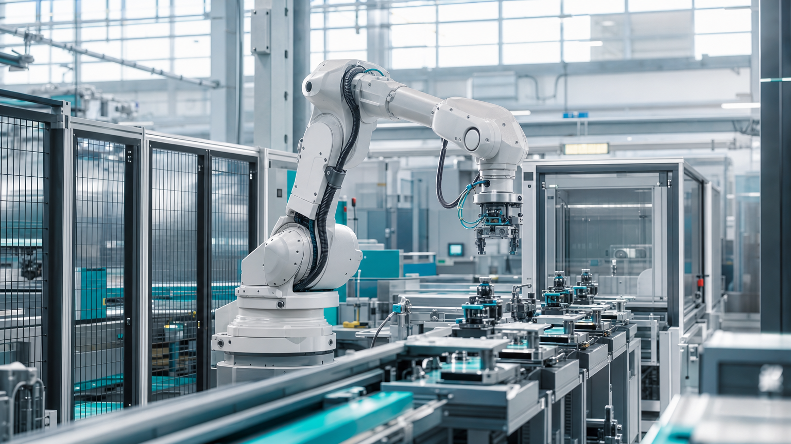

Integració de robòtica i cèl·lules automàtiques
Disseny i integració de cèl·lules robotitzades per a manipulació, paletització, alimentació de màquines i muntatge, coordinades amb la resta de la línia.
Des de la integració d'una cèl·lula robòtica fins al control complet d'una línia de producció: dissenyem, programem i posem en marxa la solució que la vostra planta necessita.
Cada projecte comença entenent el procés productiu i acaba amb una instal·lació documentada, provada i a punt per produir.
Disseny i integració de cèl·lules robotitzades per a manipulació, paletització, alimentació de màquines i muntatge, coordinades amb la resta de la línia.
Arquitectures de control robustes per a màquines i línies completes, amb sincronització de processos, gestió d'alarmes i traçabilitat de la producció.
Programació d'autòmats i panells d'operador, i disseny de les instal·lacions elèctriques i pneumàtiques associades, amb esquemes i documentació tècnica.
Actualització de màquines existents amb controls, accionaments i seguretat modernes: recupereu productivitat sense substituir tot l'equipament.
Integració de sensors industrials i sistemes de visió per a inspecció, verificació, posicionament i control de qualitat en línia.
Desenvolupament de programari de control, proves, posada en marxa a planta i formació de l'equip d'operaris i manteniment.

Transparència a cada fase: sempre sabreu on som, què queda i per què ho fem així.
Analitzem el procés, els requeriments de producció i les limitacions de la planta.
Definim l'arquitectura de control, la selecció de components i el pla d'implantació.
Desenvolupem el programari i preparem el muntatge elèctric, pneumàtic i mecànic.
Instal·lem, provem en realitat i ajustem fins assolir els objectius de producció.
Formació, documentació i acompanyament posterior per garantir-ne el bon ús.
Expliqueu-nos el repte i us proposarem una solució realista i a mida, sense compromís.